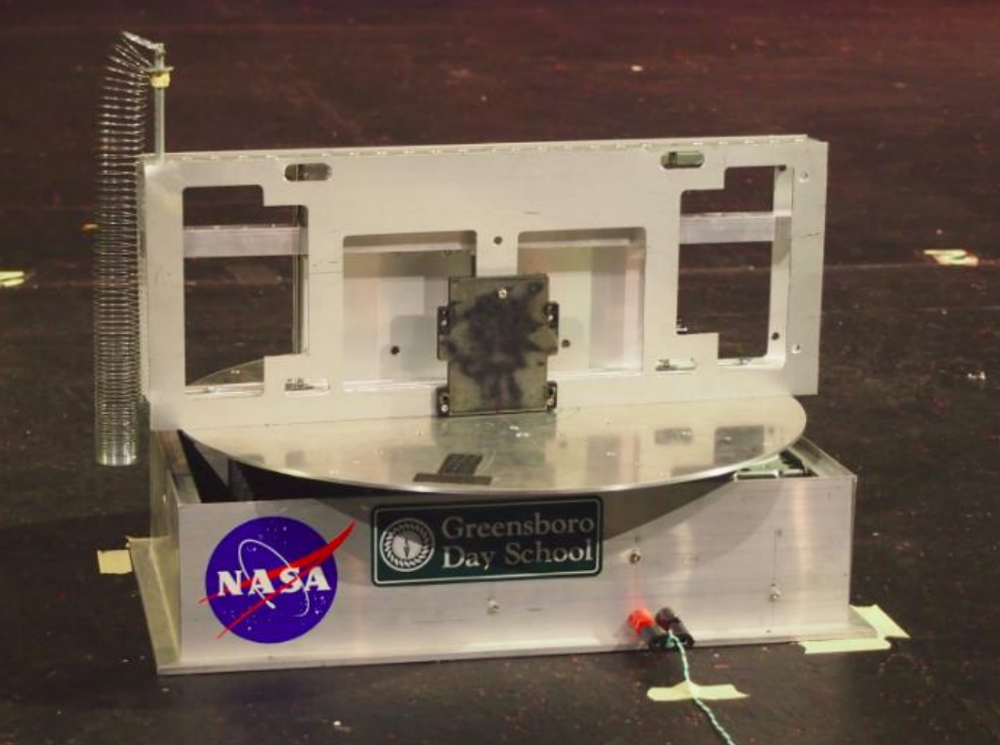
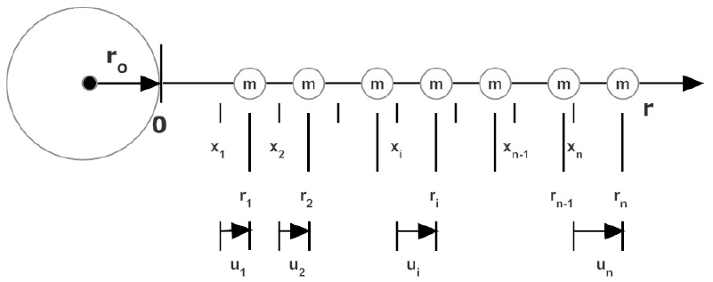
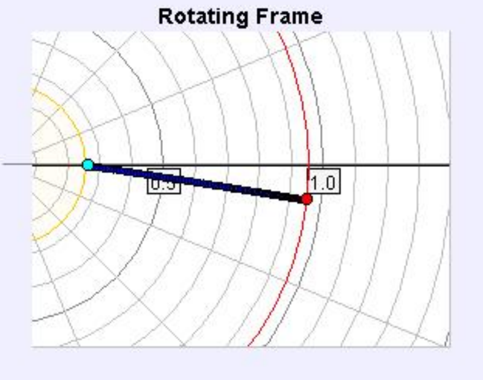
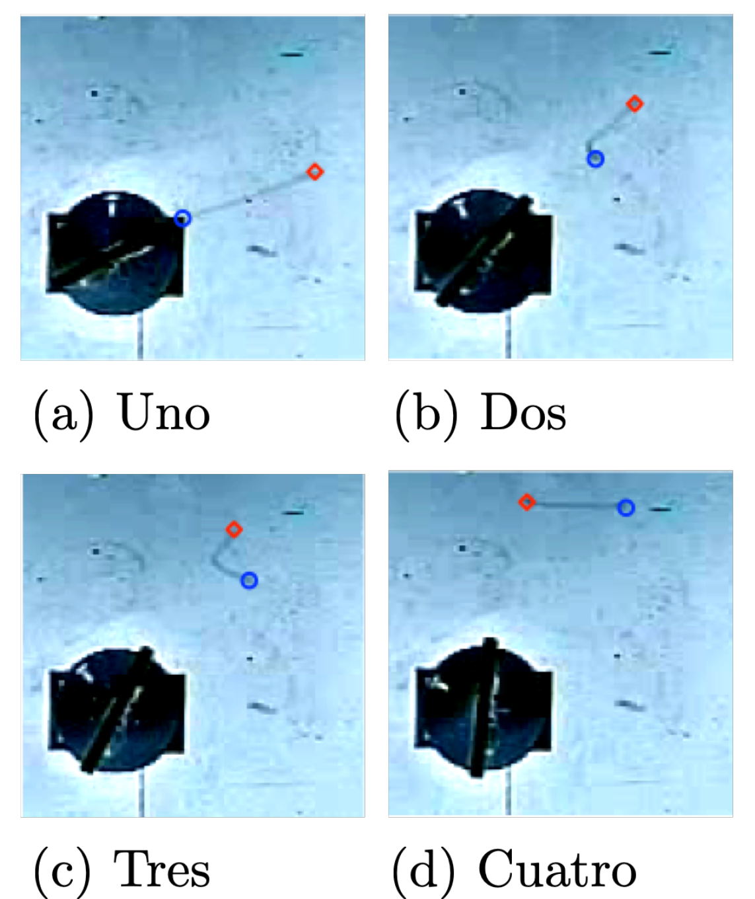

La dinámica de un muelle que gira y se suelta: con datos de vídeo de alta velocidad, el tiempo que tarda la señal en recorrer el muelle, el estiramiento cuasiestático (R = R* + Sω²), el arrastre y la caída, y el argumento dimensional t ∼ √(M/K). En castellano, euskera e inglés, con solución completa en las tres lenguas.
OrigenT. Dooling, J. Regester, M. Carnaghi y A. Titus, «The motion of a spring released from uniform circular motion», arXiv:1508.04037 (Am. J. Phys., 2016); los datos son sintéticos.
| documento | castellano | euskera | inglés |
|---|---|---|---|
| Enunciado | PDF2.1 MB | PDF2.2 MB | PDF2.1 MB |
| Hoja de respuestas | PDF0.7 MB | PDF0.7 MB | |
| Datos: tabla A1 (CSV) | CSV | ||
| Datos: tabla B1 (CSV) | CSV | ||
El objetivo de este experimento es estudiar la dinámica de un muelle giratorio. Específicamente, analizar su extensión radial bajo rotación, determinando los parámetros elástico-inerciales efectivos, y medir el «tiempo de colapso» del muelle tras su liberación, interpretándolo en términos de propagación de ondas.

Un muelle de masa total M y constante elástica efectiva K está unido por su extremo interior a un rotor de radio r_0, y gira a velocidad angular constante \omega, en un plano horizontal. El muelle se estira radialmente, y alcanza una configuración estacionaria.

Idealmente, la extensión del muelle depende de la fuerza centrífuga, que escala con \omega^2 (ver figura 2). Durante la rotación, la resistencia del aire puede causar que el muelle se retrase respecto a la línea radial un ángulo \alpha (ángulo de arrastre), y la gravedad puede causar que se curve hacia abajo un ángulo \beta (ángulo de caída).
En t=0, se libera el extremo interior. La información de que el extremo interior está libre viaja hacia el exterior como una onda elástica longitudinal. El tiempo que tarda esta señal en llegar al extremo exterior es el tiempo de colapso, t_c. Esto crea una forma característica de chevrón durante el colapso.


Una cámara de alta velocidad registra:
Parte 1: Cinemática y tiempo de colapso (Dataset A)
Los siguientes datos (tabla A1) corresponden a un evento de liberación a una velocidad nominal \omega \approx 16\ \mathrm{rad\,s^{-1}}.
| t (s) | \theta_{\text{out}} (rad) | \sigma_{\theta,\text{out}} (rad) | \theta_{\text{in}} (rad) | \sigma_{\theta,\text{in}} (rad) |
|---|---|---|---|---|
| 0.00 | 0.143 | 0.10 | 0.005 | 0.12 |
| 0.05 | 0.835 | 0.10 | 0.487 | 0.12 |
| 0.10 | 1.608 | 0.10 | 0.641 | 0.12 |
| 0.15 | 2.251 | 0.10 | 0.533 | 0.12 |
| 0.20 | 3.178 | 0.10 | 0.703 | 0.12 |
| 0.25 | 3.972 | 0.10 | 0.388 | 0.12 |
| 0.30 | 4.793 | 0.10 | 0.276 | 0.12 |
| 0.35 | 5.550 | 0.10 | 0.282 | 0.12 |
| 0.40 | 6.396 | 0.10 | 0.377 | 0.12 |
| 0.45 | 7.034 | 0.10 | 0.193 | 0.12 |
| 0.50 | 7.447 | 0.10 | 0.022 | 0.12 |
| 0.55 | 8.103 | 0.10 | 0.019 | 0.12 |
| 0.60 | 8.583 | 0.10 | 0.127 | 0.12 |
| 0.65 | 9.129 | 0.10 | 0.030 | 0.12 |
Parte 2: Equilibrio cuasiestático (Dataset B)
La tabla B1 presenta medidas en estado estacionario para diferentes velocidades angulares.
| \omega (rad/s) | R_{\text{out}} (m) | \sigma_R (m) | \alpha (°) | \sigma_\alpha (°) | \beta (°) | \sigma_\beta (°) | t_c (s) | \sigma_{t_c} (s) |
|---|---|---|---|---|---|---|---|---|
| 8 | 0.1088 | 0.002 | 4.34 | 0.5 | 19.52 | 0.7 | 0.4287 | 0.01 |
| 10 | 0.1399 | 0.002 | 6.58 | 0.5 | 18.14 | 0.7 | 0.4321 | 0.01 |
| 12 | 0.1742 | 0.002 | 9.28 | 0.5 | 17.79 | 0.7 | 0.4221 | 0.01 |
| 14 | 0.2241 | 0.002 | 12.98 | 0.5 | 17.81 | 0.7 | 0.4273 | 0.01 |
| 16 | 0.2699 | 0.002 | 17.28 | 0.5 | 15.95 | 0.7 | 0.4281 | 0.01 |
| 18 | 0.3291 | 0.002 | 20.46 | 0.5 | 15.71 | 0.7 | 0.4249 | 0.01 |
| 20 | 0.3958 | 0.002 | 24.55 | 0.5 | 14.47 | 0.7 | 0.4205 | 0.01 |
Parte 3: Análisis de arrastre y caída
Parte 4: Análisis de propagación de ondas
Parte 5: Análisis avanzado